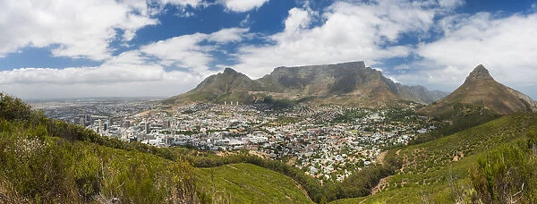
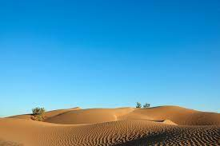

Day 2: Major Physical Features of Africa
Africa is a continent with diverse physical features that include lakes, rivers, mountains, and more.
Lakes
Some of the largest lakes in the world are found in Africa, including Lake Victoria, the largest lake in Africa, and Lake Tanganyika, the second deepest in the world.


Rivers
The Nile River, which many believe originates in Rwanda, is the longest river in the world. Other significant rivers include the Congo River and the Niger River.

Mountains
Africa has several major mountain ranges, including the Atlas Mountains in the north and the Drakensberg Mountains in the south. Mount Kilimanjaro in Tanzania is the highest peak in Africa.

Great Rift Valley
The Great Rift Valley is a significant geological feature that runs from Lebanon to Mozambique, passing through East Africa.
Oceans
Africa is surrounded by several major bodies of water, including the Mediterranean Sea to the north, the Red Sea to the northeast, the Indian Ocean to the southeast, and the Atlantic Ocean to the west.

Historical Figures
Africa has a rich history with many notable figures, such as Nelson Mandela, who played a key role in ending apartheid in South Africa.

Real Facts
Africa is known for its rich biodiversity, including numerous species of flora and fauna found nowhere else on Earth. It is also the birthplace of humanity, with evidence of the earliest humans found on this continent.


What do you kow about Kenya?
Kenya is known for its diverse landscapes, including savannahs, lakes, and the Great Rift Valley. It is a popular destination for safaris.

What do you kow about South Africa?
South Africa is famous for its natural beauty, including Table Mountain and Kruger National Park. It is also known for its rich history and cultural heritage.
What do you kow about Egypt?
Egypt is home to ancient monuments such as the Pyramids of Giza and the Sphinx. The Nile River also plays a crucial role in its history and culture.

what are Major Physical Features of Africa?
1.Great Rift Valley
The Great Rift Valley is a significant geological feature stretching from Lebanon to Mozambique, with a diverse range of landscapes and ecosystems.
2.Sahara Desert
The Sahara Desert is the largest hot desert in the world, covering much of North Africa, known for its vast dunes, oases, and arid climate.

3.Mount Kilimanjaro
Mount Kilimanjaro in Tanzania is the highest peak in Africa, known for its snow-capped summit and the diverse ecosystems found on its slopes.